40 سؤال
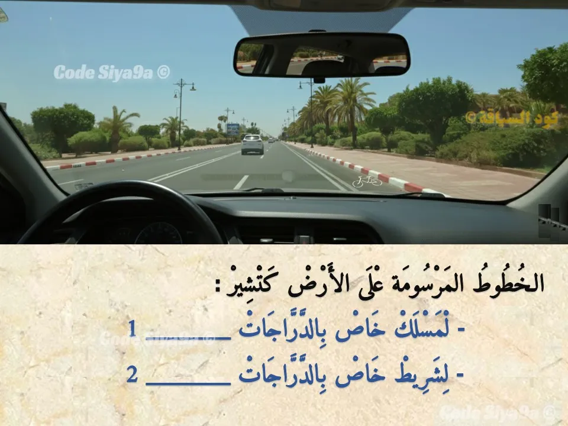
الجواب الصحيح: 2
الخطوط اللي مرسومه على الارض كاتشير للشريط خاص بالدراجات .
على هذا الشريط ممنوع الوقوف او التوقف او السير.
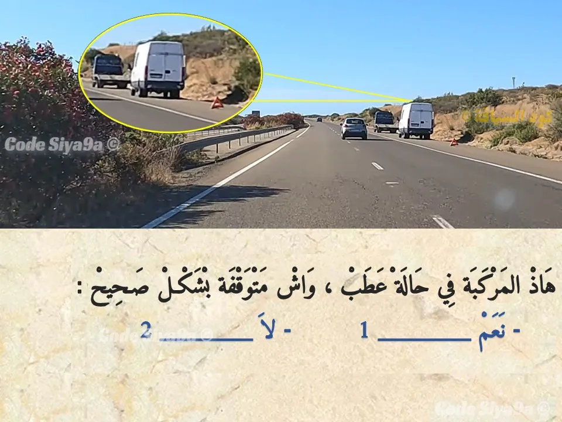
الجواب الصحيح: 1
حل المركبه في حاله عطب متوقفه في مسلك الوقوف الاستعجالي وداير مثلث ديال العطب.
التوقف ديالها بشكل صحيح
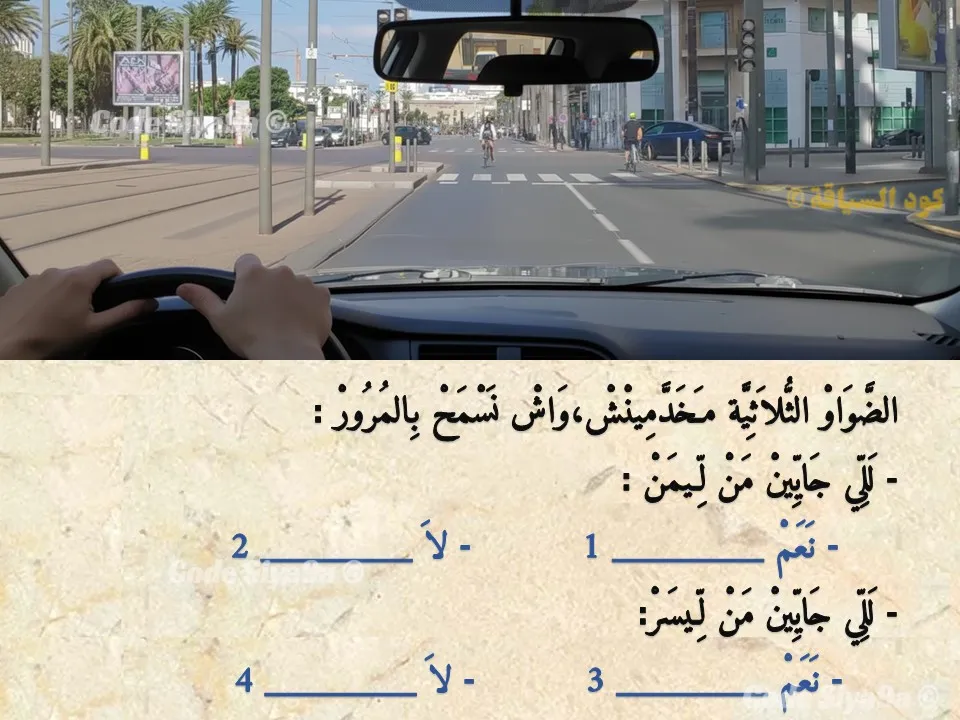
الجواب الصحيح: 1 و 4
في حاله ما كانش الضوء الثلاثي خدام في هذه الحاله غادي نرجعوا للعلامات الاخرى في حاله ما كانوش علامات اخرى اللي كاتنظم حق الاسبقيه في هذا ملتقى الطرق.
هذه الحاله الاسبقيه للي جاي من اليمن.
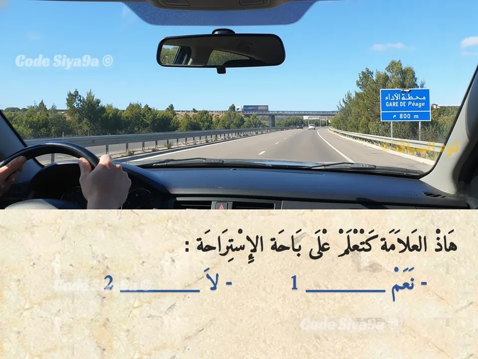
الجواب الصحيح: 2
التشوير الطرقي كيعلم على محطه الاداء على بعد 800 متر غادي نوصل لمحطه الاداء وليس باحه الاستراحه
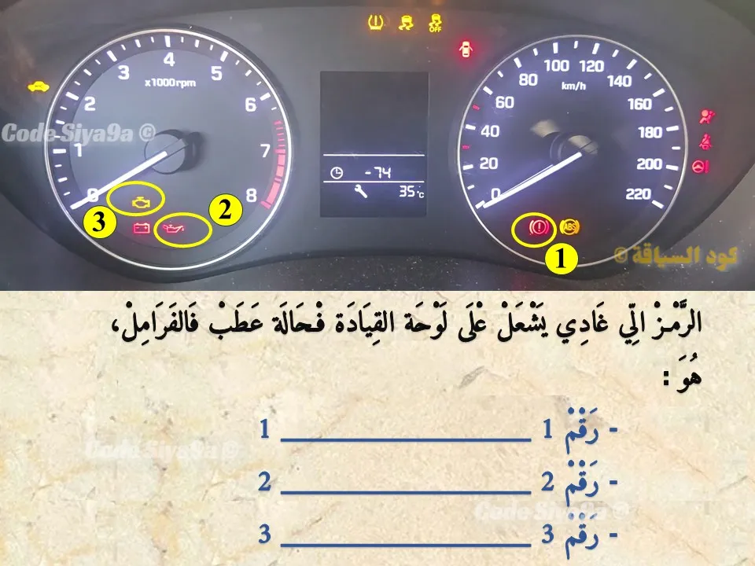
الجواب الصحيح: 1
الرمز اللي غادي يشعل على لوحه القياده في حاله عطب الفرافير هو رقم 1
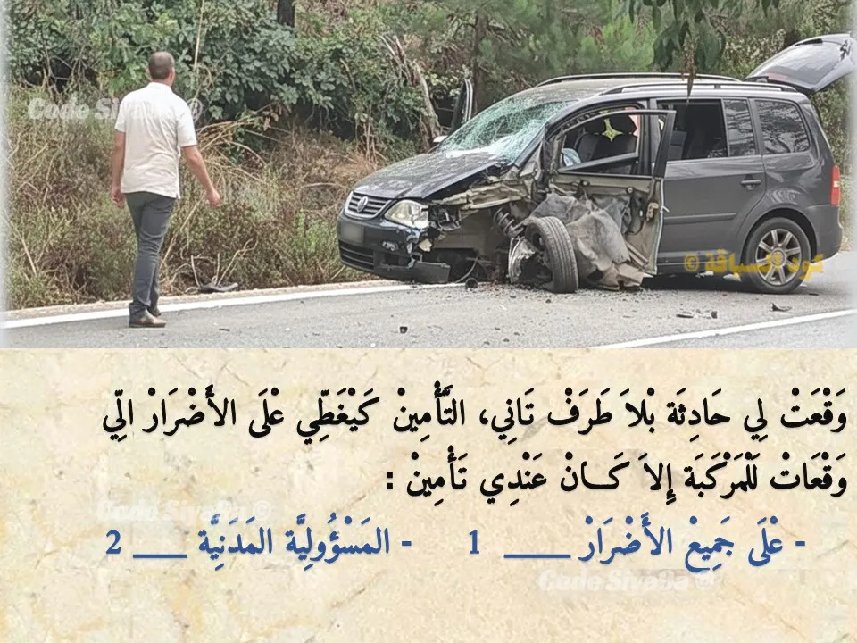
الجواب الصحيح: 1
في حاله وقعت لي حديثه بلا طرف ثاني التامين اللي غادي يعوض الاضرار اللي وقعت لمركبتي هو تامين على جميع الاضرار
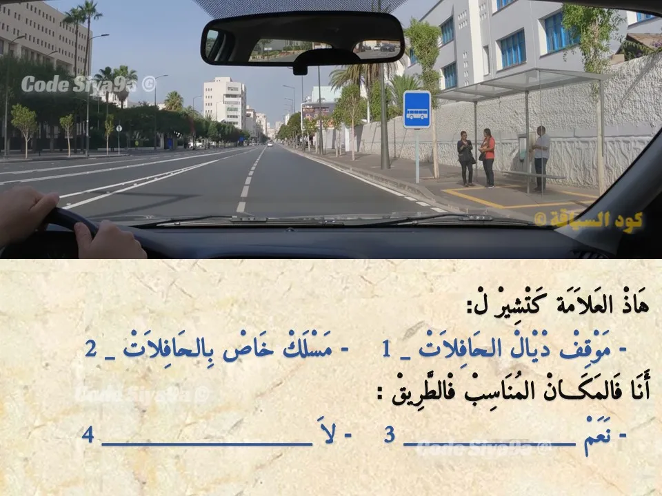
الجواب الصحيح: 1 و 3
هذه العلامه كاتعلم على موقف ديال حافلات هذه الحاله ما كاينش مسلك خاص بالحافلات. يعني انا في المكان المناسب من الطريق.
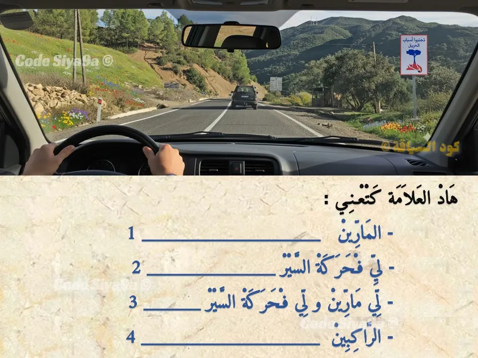
الجواب الصحيح: 3
العلامة الموجودة في الصورة هي علامة إرشادية (مربعة الشكل) "تجنبوا أسباب الحريق".
- الرقم الصحيح هو 3: لي مارين ولي فحركة السير (المارين والذين هم في حركة السير).
توضيح الخيارات:
1- المارين: تشمل الراجلين أو العابرين بجانب الطريق.
2- لي فحركة السير: تشمل السائقين والركاب داخل العربات.
3- لي مارين ولي فحركة السير: هي الإجابة الأشمل لأن التحذير موجه لكل من يتواجد في تلك المنطقة الغابوية.
4- الراكبين: تخص فقط من يتواجدون داخل الحافلات أو السيارات.
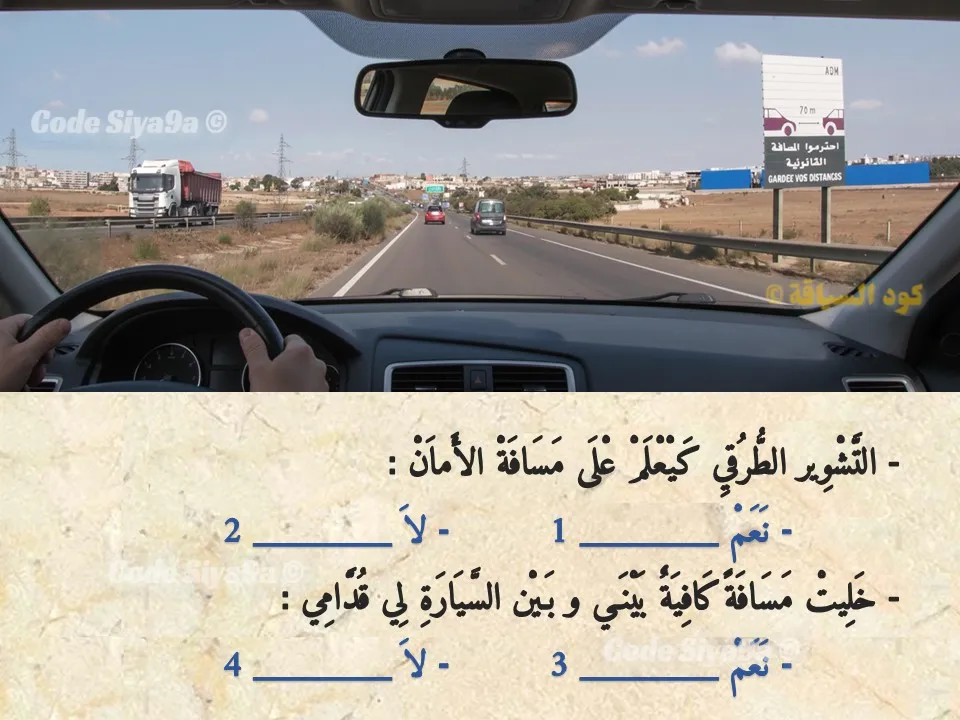
الجواب الصحيح: 1 و 3
الإجابة الصحيحة: 1 و 3 ✅
1- نعم (التشوير يعلم بمسافة الأمان): 🚦 توجد علامة إرشادية واضحة على اليمين تفرض ترك مسافة 70 متر بين العربات.
3- نعم (المسافة كافية): 📏 بالنظر لخطوط الحاشية اليمنى (كل خط 20 متر والفراغ 6 أمتار)، نجد أن المسافة بينك وبين السيارة الحمراء تتجاوز 70 متراً، فهي مسافة آمنة وقانونية.
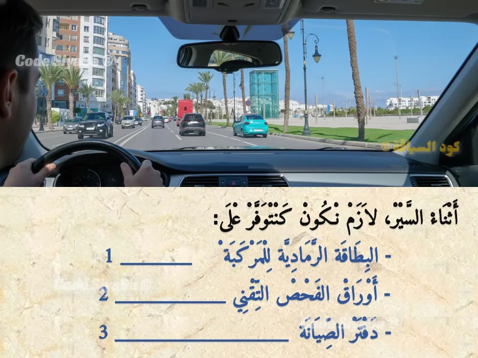
الجواب الصحيح: 1 و 2
الإجابة الصحيحة: 1 و 2 ✅
1- البطاقة الرمادية للمركبة: 💳 وثيقة إجبارية لإثبات ملكية وهُوية السيارة أثناء السير.
2- أوراق الفحص التقني: 🛠️ ضرورية للمركبات التي تجاوز عمرها 5 سنوات لإثبات سلامتها الميكانيكية.
3- لا (دفتر الصيانة): 📔 هو دفتر اختياري للمتابعة الشخصية وليس من الوثائق القانونية التي يطلبها الشرطي عند المراقبة.
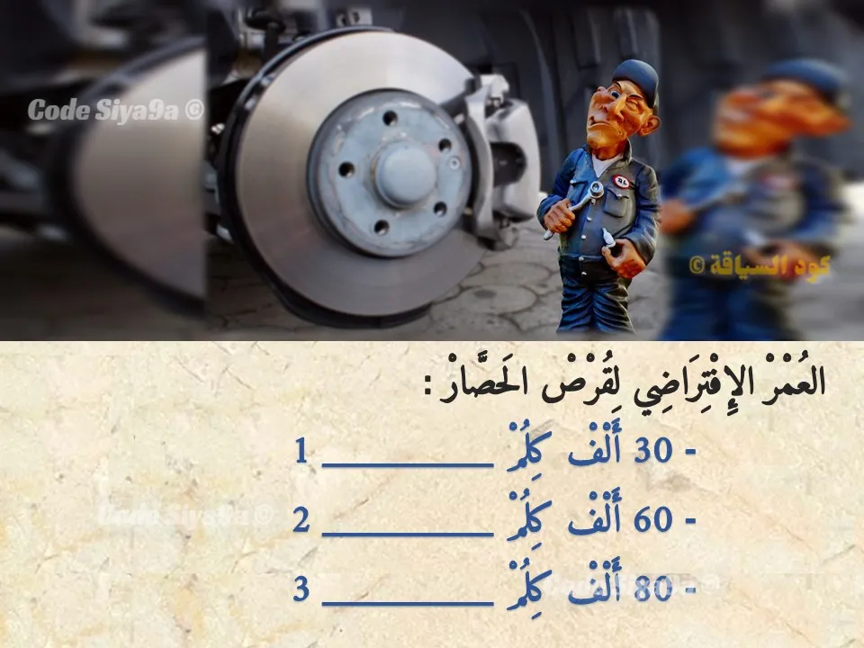
الجواب الصحيح: 3
الجواب الصحيح: 3 ✅
العمر الافتراضي لقرص الحصار هو 80 ألف كلم
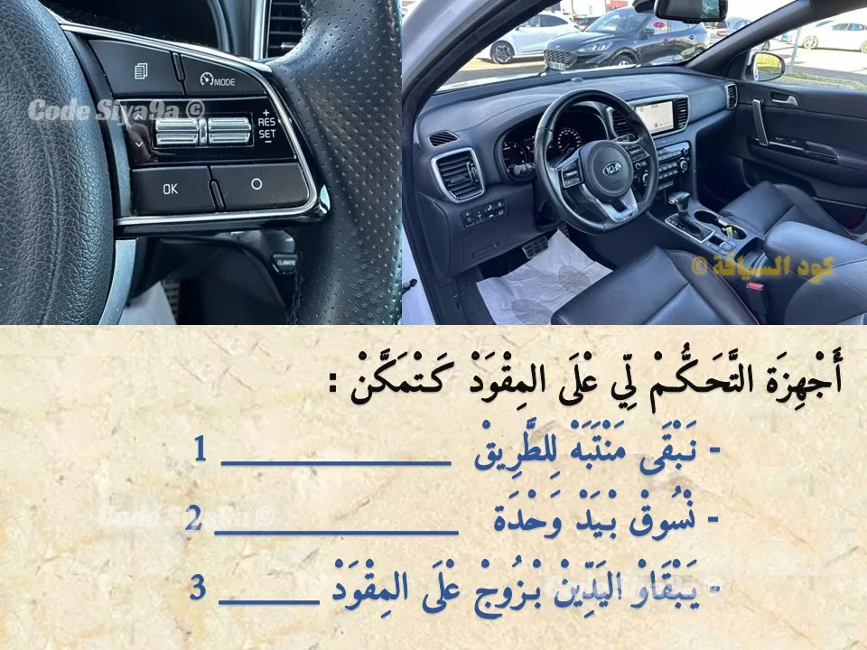
الجواب الصحيح: 1 و 3
أجهزة التحكم لي على المقود كتَمَكّن:
نبقى منتبه للطريق: نعم (1) ✅.
نسوق بيد وحدة: لا (2) ❌.
يبقاو اليدين بجوج على المقود: نعم (3) ✅.
الجواب الصحيح: 1 - 3
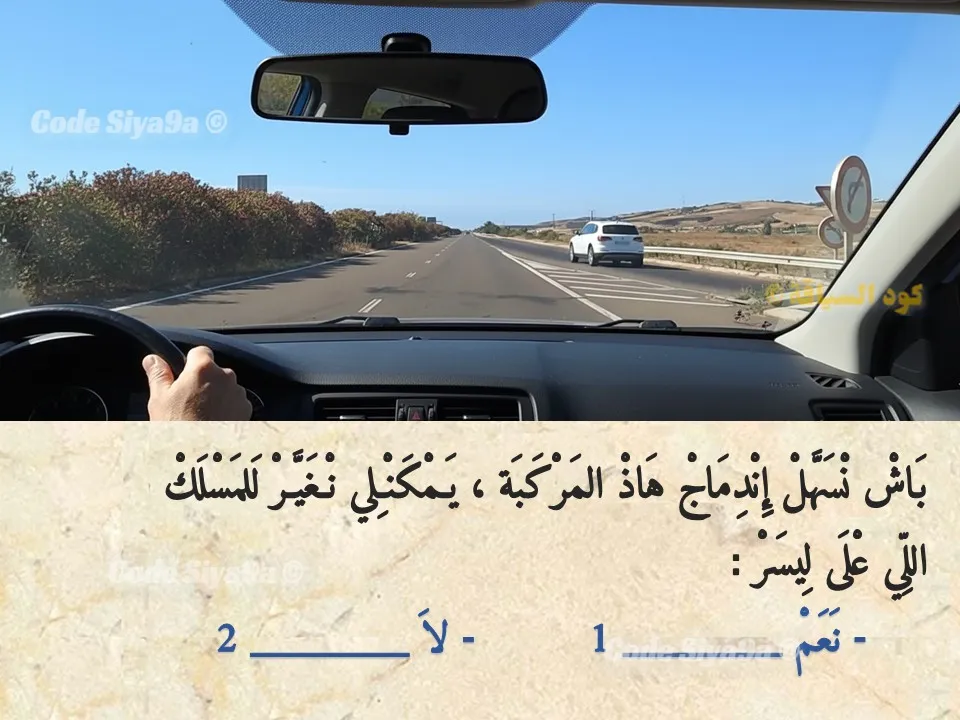
الجواب الصحيح: 1
اندماج المركبات (مسلك الاندماج) 🚗
باش نسهّل اندماج هاذ المركبة، يمكن لي نغير للمسلك اللي على اليسار:
نعم (1) ✅.
الشرح: بما أن الطريق السيار فارغ من الخلف (في المرآة) واليسار متاح، فمن باب "أدبيات السياقة" وتسهيل حركة السير، يمكنك الانتقال للمسلك الأيسر لترك مساحة للسيارة البيضاء التي تدخل من مسلك الاندماج.
الجواب الصحيح: 1
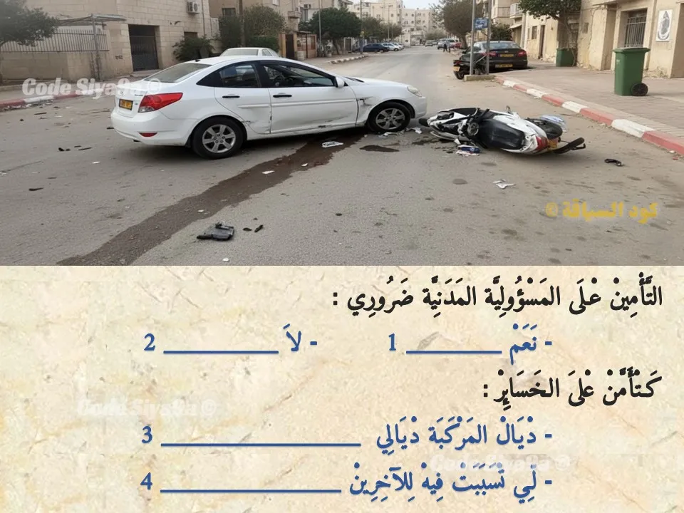
الجواب الصحيح: 1 و 4
التأمين (المسؤولية المدنية) 🛡️
التأمين على المسؤولية المدنية ضروري؟ نعم (1) ✅. (هو التأمين الإجباري الأدنى القانوني).
كتأمّن على الخسائر:
ديال المركبة ديالي: لا (3) ❌.
لي تسببت فيه للآخرين: نعم (4) ✅. (هذا التأمين يعوض الضحايا الآخرين وليس صاحب السيارة المتسبب في الحادث).
الجواب: 1 - 4
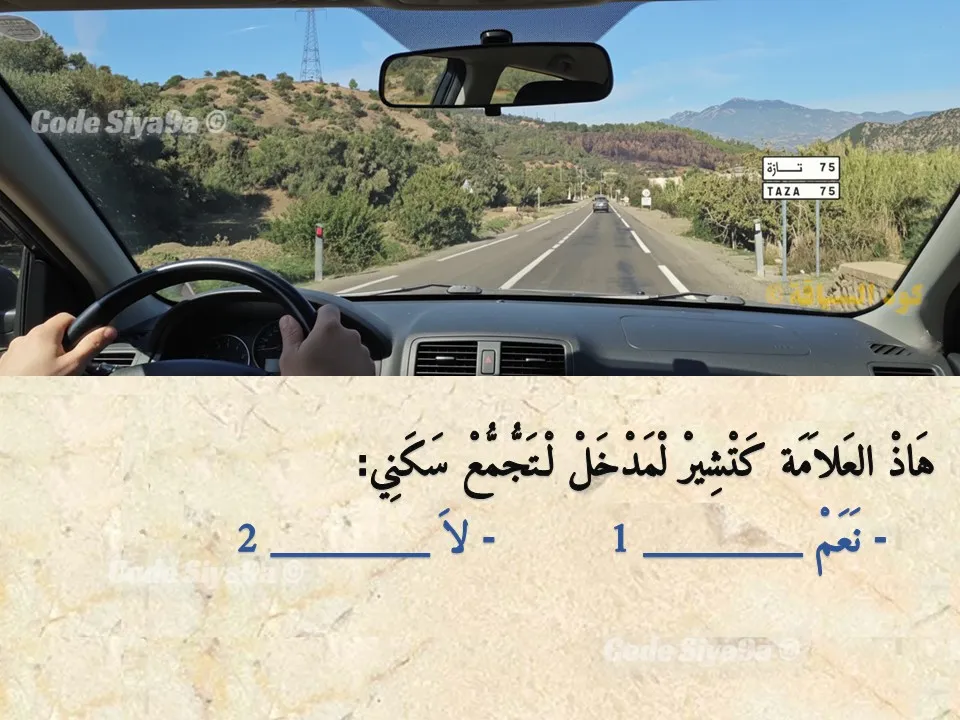
الجواب الصحيح: 2
هاذ العلامة كتشير لمدخل لتجمع سكني؟
لا (2) ❌.
الشرح: العلامة تظهر اسم المدينة (تازة) مع المسافة المتبقية (75 كلم)، وهي علامة تأكيد الاتجاه والمسافة وليست علامة دخول التجمع السكني (التي تكون بالاسم فقط داخل إطار أحمر وبدون مسافة).
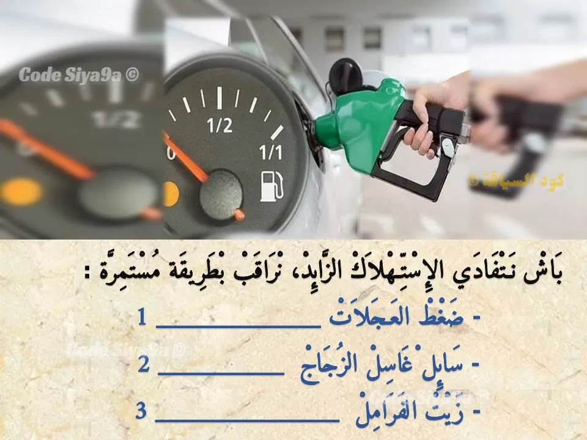
الجواب الصحيح: 1
باش نتفادى الاستهلاك الزايد، نراقب بطريقة مستمرة:
ضغط العجلات (1) ✅.
الشرح: العجلات غير المنفوخة جيداً تزيد من مقاومة السيارة وتؤدي لزيادة كبيرة في استهلاك الوقود 📉. سائل غسل الزجاج وزيت الفرامل ليس لهما علاقة مباشرة باستهلاك الوقود.
الجواب: 1
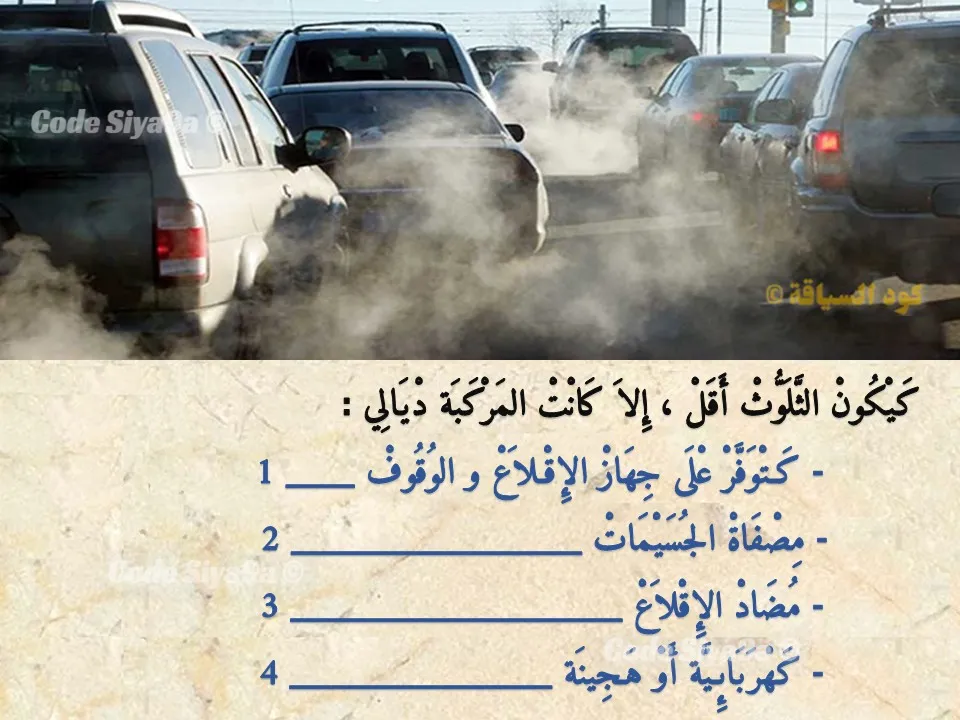
الجواب الصحيح: 1 و 2 و 4
كيكون التلوث أقل، إلا كانت المركبة ديالي:
كتوفر على جهاز الإقلاع والوقوف (Start & Stop): نعم (1) ✅. (يقلل الانبعاثات عند الوقوف في الزحام).
مصفاة الجسيمات (FAP): نعم (2) ✅. (تساعد في تصفية الغازات السامة).
كهربائية أو هجينة: نعم (4) ✅. (هي الأقل تلوثاً للبيئة).
الجواب: 1 - 2 - 4
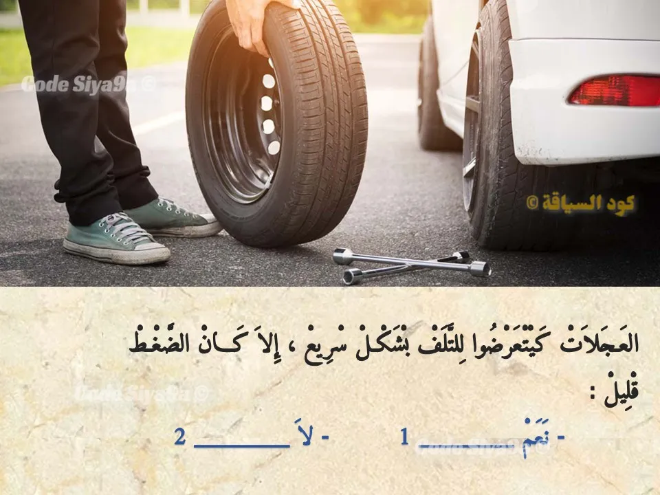
الجواب الصحيح: 1
العجلات كيتعرضوا للتلف بشكل سريع، إلا كان الضغط قليل:
نعم (1) ✅.
الشرح: الضغط المنخفض يؤدي لزيادة احتكاك العجلة مع الطريق، مما يسبب سخونتها وتلفها بسرعة، كما يزيد من استهلاك الوقود.
الجواب: 1
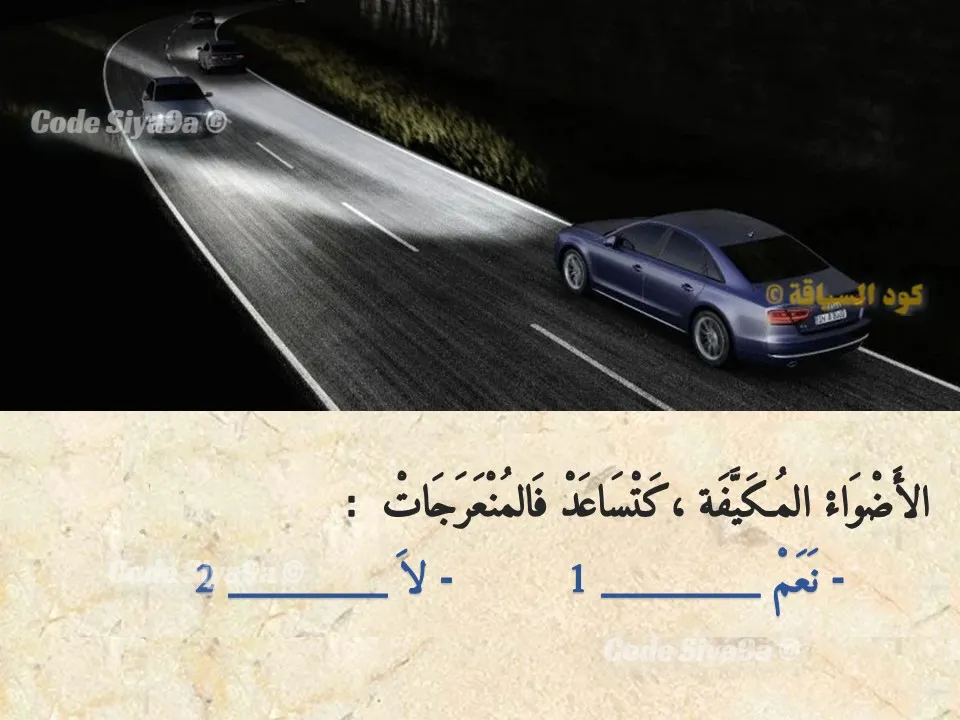
الجواب الصحيح: 1
نعم (1) ✅.
الشرح: الأضواء المكيفة أو المتحركة (Directional Headlights) تتبع زاوية توجيه المقود، مما يسمح بإنارة المنعرج بشكل أفضل قبل دخوله، وهذا يزيد من سلامة الرؤية الليلية بشكل كبير 🔦.
الجواب: 1
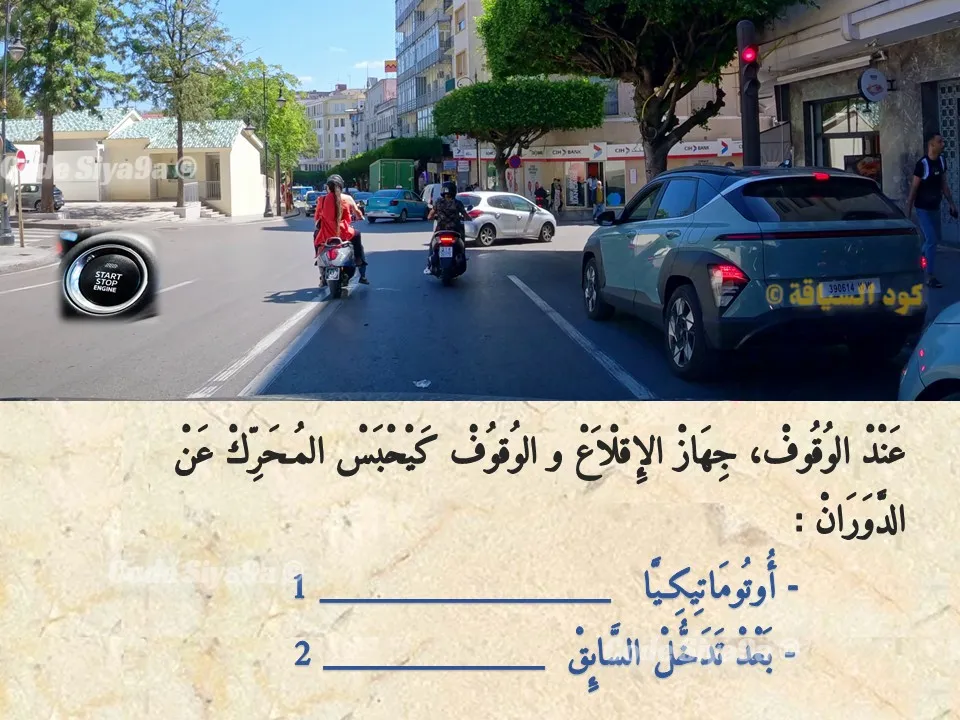
الجواب الصحيح: 1
كيف يعمل النظام؟ ⚙️
إيقاف المحرك: يتوقف المحرك عن الدوران تلقائياً (أوتوماتيكياً) بمجرد توقف السيارة بالكامل.
إعادة التشغيل: يعود المحرك للعمل فوراً عند الضغط على دواسة الوقود أو البدء في تحريك نظام التشغيل.
الفوائد الرئيسية للنظام 🌟
توفير الوقود: يساهم بشكل مباشر في تقليل استهلاك الوقود خاصة أثناء التوقفات المتكررة.
حماية البيئة: يساعد في تخفيض انبعاثات غازات العادم الضارة، مما يجعله صديقاً للبيئة.
الراحة والأمان: يقلل من الاهتزازات المزعجة أثناء التوقف، كما يتضمن ميزات تمنع إطفاء المحرك في حالات الطوارئ لضمان سلامة السائق.
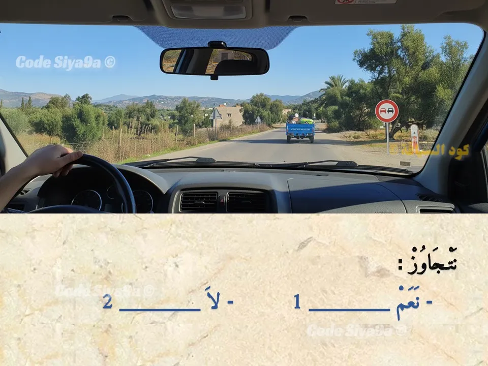
الجواب الصحيح: 2
الجواب الصحيح: لا (2)
الشرح: توجد علامة منع التجاوز على اليمين (دائرة حمراء بها سيارتان)، وهي تمنع تجاوز جميع العربات ذات محرك باستثناء الدراجات النارية بدون عربة جانبية. بما أن العربة التي أمامك هي "تريبورتور" (عربة بثلاث عجلات)، فالتجاوز ممنوع قانونياً في هذه الحالة.
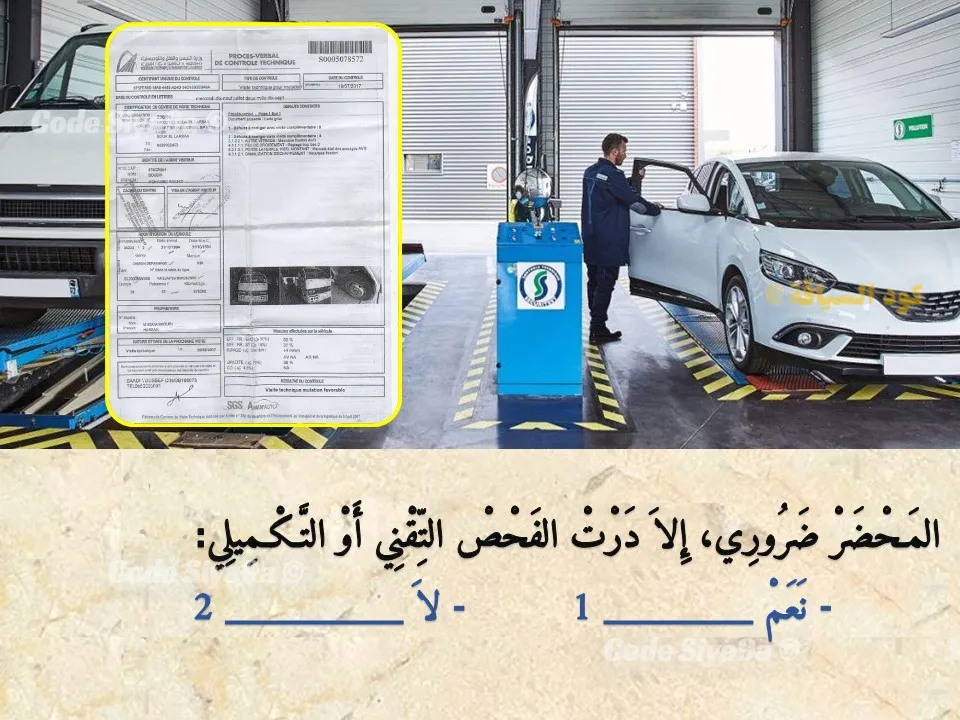
الجواب الصحيح: 1
الإجابة الصحيحة هي: 1 - نَعَم
التوضيح:
إلزامية المحضر: عند خضوع المركبة للفحص التقني (سواء كان فحصاً دورياً أو تكميلياً)، يُسلم مركز الفحص للمالك محضراً يثبت حالة المركبة.
تجديد المحضر: هذا المحضر ضروري جداً ويجب الاحتفاظ به مع أوراق السيارة، وفي حال ضياعه أو انتهاء صلاحيته، يجب إعادة الفحص أو الحصول على نظير قانوني، لأن سياقة مركبة دون فحص تقني ساري المفعول يعتبر مخالفة قانونية.
الفحص التكميلي: هو فحص إضافي يُطلب عادة للمركبات الكبيرة (نقل البضائع) أو في حالة وجود عيوب تقنية استوجبت إصلاحات وإعادة الفحص (Contre-visite).
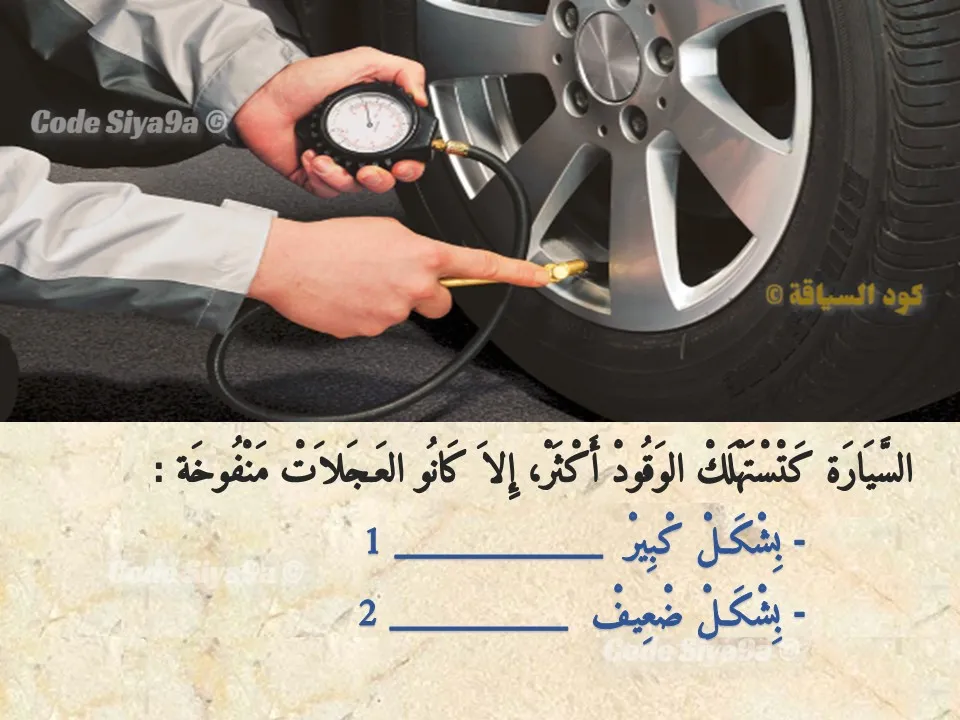
الجواب الصحيح: 2
ضغط الهواء واستهلاك الوقود 📉
السيارة كتستهلك الوقود أكثر، إلا كانوا العجلات منفوخة: بشكل ضعيف (2). (العجلات غير المنفوخة جيداً تزيد الاستهلاك).
الجواب: 2 ✅
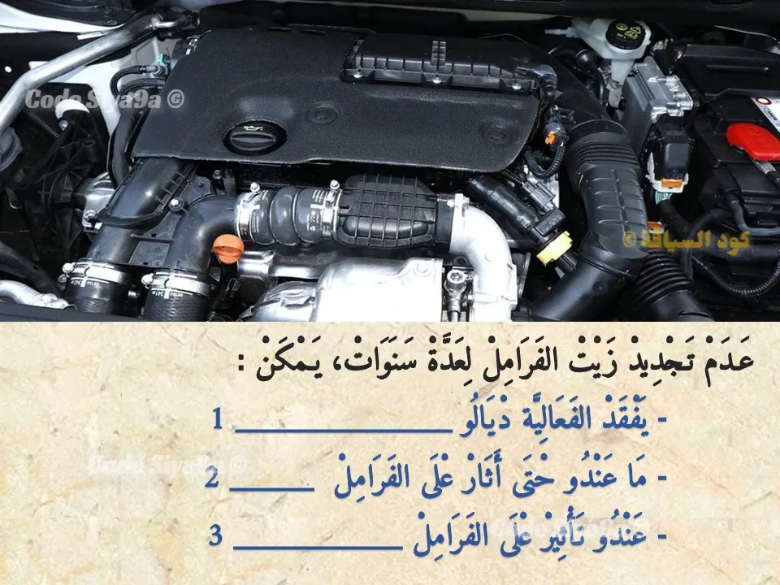
الجواب الصحيح: 1 و 3
لماذا يجب تغيير زيت الفرامل بانتظام؟ 🧪
امتصاص الرطوبة (الماء): زيت الفرامل سائل "هيدروسكوبي"، أي أنه يمتص الرطوبة من الهواء مع مرور الوقت. وجود الماء داخل الزيت يقلل من درجة غليانه، مما يجعله يفقد فعاليته عند الكبح المستمر (مثلاً في المنحدرات).
تآكل الأجزاء الداخلية: الرطوبة التي يمتصها الزيت القديم تتسبب في صدأ وتآكل الأجزاء المعدنية داخل نظام الفرامل (مثل المضخة والأنابيب)، وهذا هو التأثير المباشر على سلامة النظام.
فقدان الضغط: عندما يسخن الزيت القديم المليء بالرطوبة، يتحول الماء بداخله إلى فقاعات غازية؛ وبما أن الغاز يضغط عكس السائل، ستشعر أن دواسة الفرامل أصبحت "إسفنجية" ولا تستجيب بسرعة، مما يزيد من مسافة الوقوف.
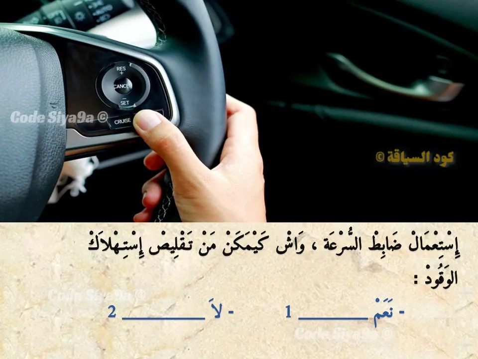
الجواب الصحيح: 1
لماذا يساعد ضابط السرعة في تقليص استهلاك الوقود؟ ⛽
تجنب التغييرات المفاجئة: عندما تتحكم قدماك في الدواسة، غالباً ما تحدث تغييرات طفيفة وغير محسوسة في السرعة (تسارع ثم تباطؤ)، وهذا يستهلك وقوداً أكثر.
الحفاظ على سرعة ثابتة: يقوم ضابط السرعة بالحفاظ على سرعة مستقرة للمحرك، مما يجعله يعمل في أفضل حالاته الاقتصادية، خاصة في الطرق الطويلة والسيار.
الراحة والتحكم: بالإضافة لتوفير الوقود، فإنه يقلل من تعب السائق ويساعد على احترام السرعة القانونية المحددة.
باختصار: الثبات في السرعة الذي يوفره هذا النظام هو المفتاح لتقليل كمية الوقود التي تحرقها السيارة.
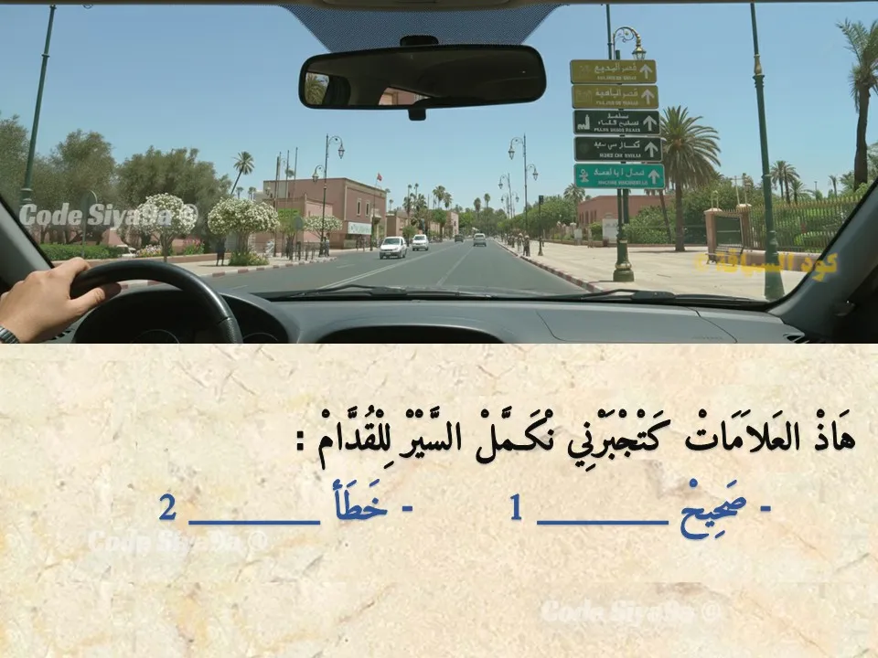
الجواب الصحيح: 2
الجواب الصحيح: خَطَأ (2).
لماذا الجواب هو "خطأ"؟
ليست علامات إجبار: العلامات التي تراها في الصورة هي علامات إرشاد وتوجيه فقط.
حرية الاختيار: هذه اللوحات تدلك على الاتجاهات المؤدية لبعض المعالم (مثل قصر الباهية أو قصر البديع)، لكنها لا تجبرك قانونياً على اتباع مسار معين.
غياب سهم الإجبار: علامة الإجبار تكون دائماً دائرية وزرقاء وبداخلها سهم أبيض، وهي غير موجودة هنا.
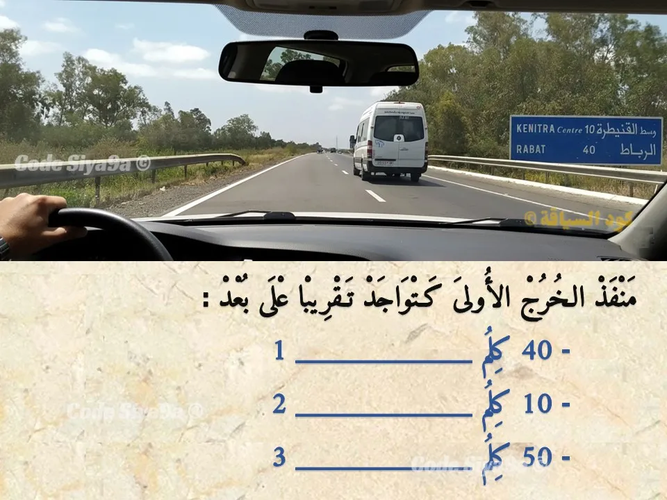
الجواب الصحيح: 2
الجواب الصحيح هو: 10 كلم (2).
عند النظر إلى اللوحة الزرقاء على اليمين:
تشير اللوحة إلى أن الاتجاه نحو وسط القنيطرة (KENITRA Centre) يقع على بُعد 10 كلم.
بما أن وسط المدينة يتم الوصول إليه عادةً عبر أول مخرج قريب، فإن منفذ الخروج الأول يتواجد تقريباً على بُعد 10 كلم.
أما مدينة الرباط (RABAT) فهي لا تزال على بُعد 40 كلم.
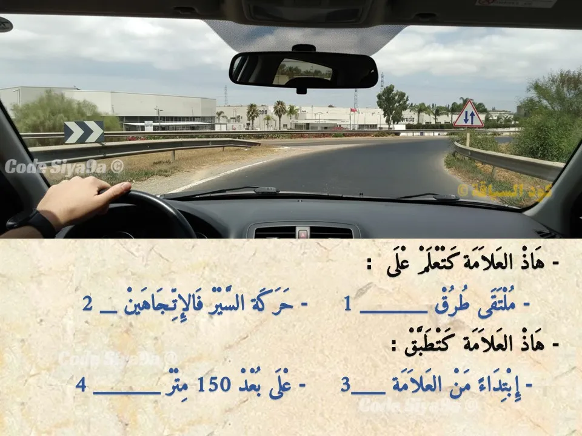
الجواب الصحيح: 2 و 3
الأجوبة الصحيحة: 2 و 3.
إليك الشرح المبسط لهذه العلامة:
ماذا تعني العلامة؟ هي علامة خطر تشير إلى أن الطريق ستصبح ذات اتجاهين، أي حركة السير في الاتجاهين (2).
متى يبدأ تطبيقها؟ هذه العلامة هي الاستثناء الوحيد في علامات الخطر؛ فهي تطبق ابتداءً من العلامة (3) وليس على بُعد 50 أو 150 متر كباقي العلامات.
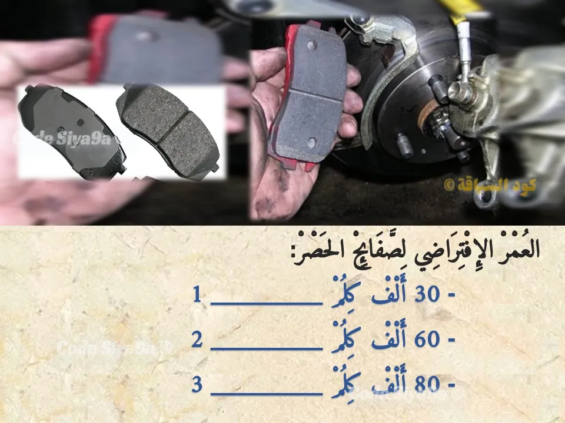
الجواب الصحيح: 1
الجواب الصحيح: 30 ألف كلم (1).
إليك الفرق المهم الذي يجب الانتباه له في ميكانيك العربة للامتحان:
صفائح الحصر (Plaquettes de frein): هي قطع تستهلك بسرعة أكبر لأنها تحتك مباشرة بالقرص عند كل عملية فرملة، لذا فإن عمرها الافتراضي التقريبي هو 30 ألف كلم (1).
قرص الحصار (Disque de frein): هو القطعة المعدنية الصلبة، وعمرها أطول بكثير ويصل عادة إلى 80 ألف كلم.
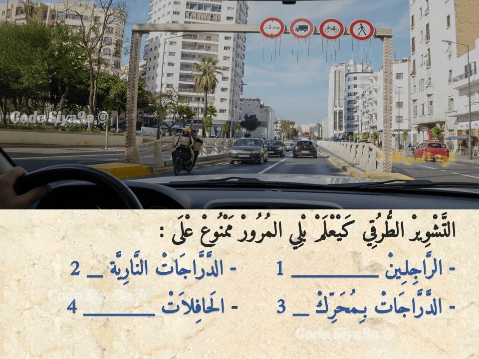
الجواب الصحيح: 1 و 3
التشوير الطرقي كايعلم باللي ممنوع المرور على:
- الرجلين.
- الدراجات بمحرك.
- الشاحنات.
- على المركبات اللي كايتجاوز العلو ديالهم 3.5 متر.
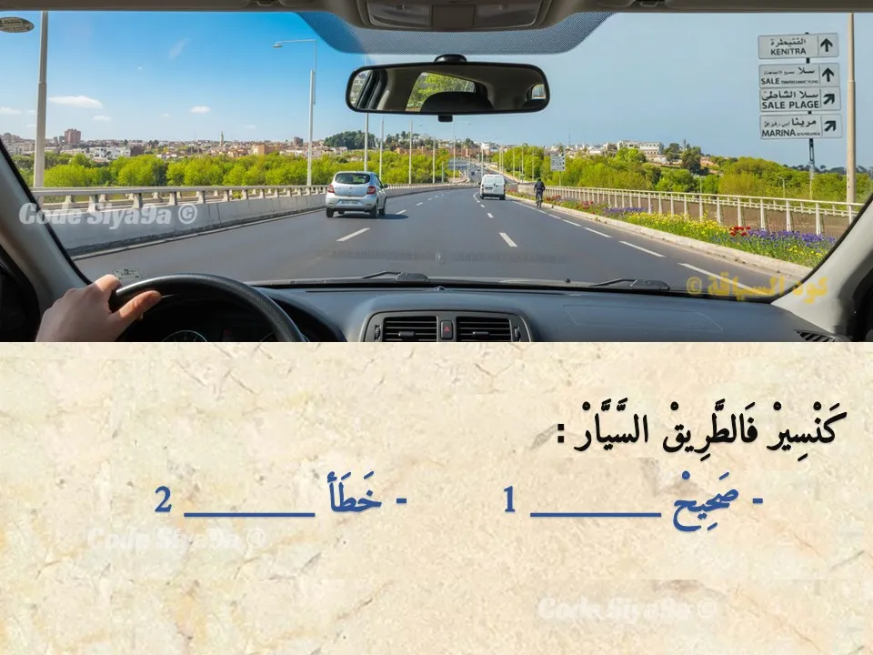
الجواب الصحيح: 2
الطريق هو طريق سريع وليس طريق السياره. طريق السياره التشوير دياله كيكون باللون الازرق.
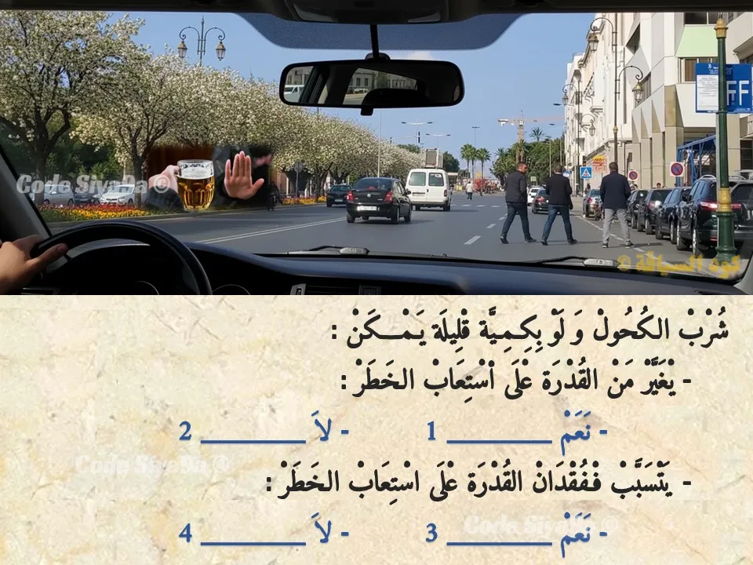
الجواب الصحيح: 1 و 3
نعم، شرب الكحول حتى بكميات قليلة يمكن أن يؤثر على القدرة على استيعاب المخاطر. الكحول يغير من طريقة عمل الدماغ، مما يؤدي إلى ضعف في القدرة على التفكير الواضح واتخاذ القرارات السليمة.
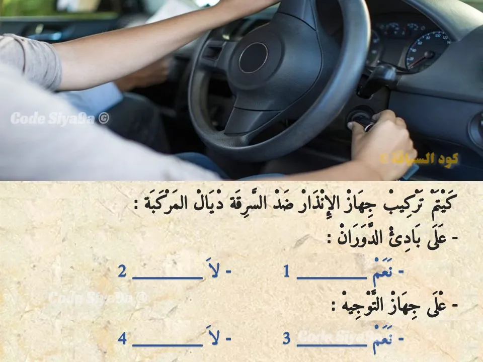
الجواب الصحيح: 2 و 3
كيتم تركيب جهاز الانذار ضد السرقه ديال المركبه على جهاز التوجيه " المقود"
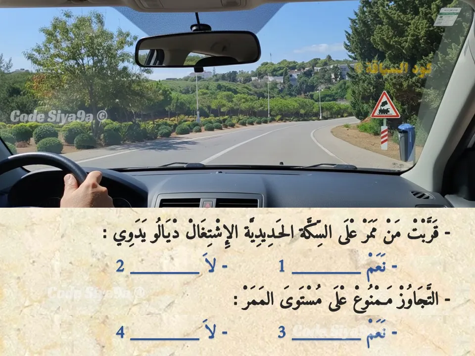
الجواب الصحيح: 2 و 3
كتعلن هذه العلامه على خاطر الاقتراب من السكه ديال القطار بدون حاجز ونصف حاجز.
من الواجب اللي ينقص من السرعه وفاش نوصل للتقاطع نوقف و نتاكد من عدم اقتراب اي قطار وعاد ندوز.
⛔ ممنوع التجاوز على مستوى الممر
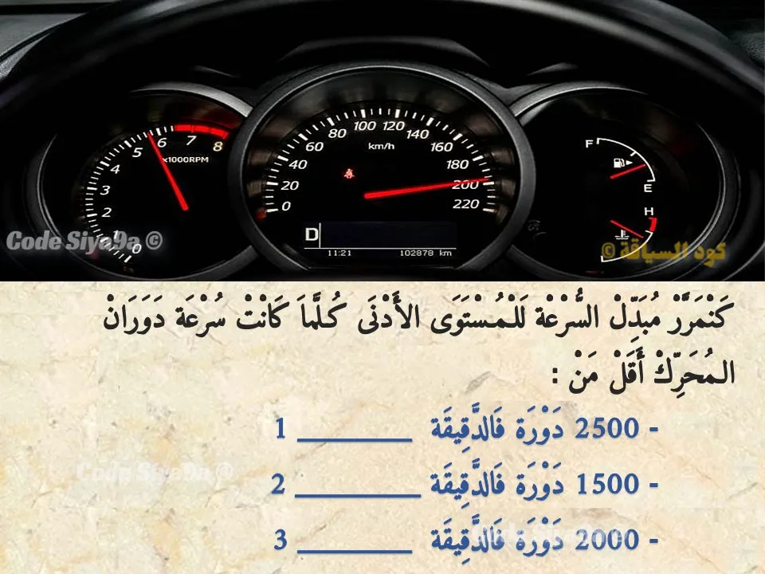
الجواب الصحيح: 2
تغيير مستويات السرعة يكون تدريجيا إما تصاعديا أو تنازليا بالضغط على دواسة الواصل بالكامل ثم تحريك عتلة التسريع إلى المستوى الموالي أو السابق.
- رفع مستوى السرعة كلما كانت سرعة دوران المحرك أكبر من 2500 دورة في الدقيقة.
- خفض مستوى السرعة كلما كانت سرعة دوران المحرك أقل من 1500 دورة في الدقيقة.
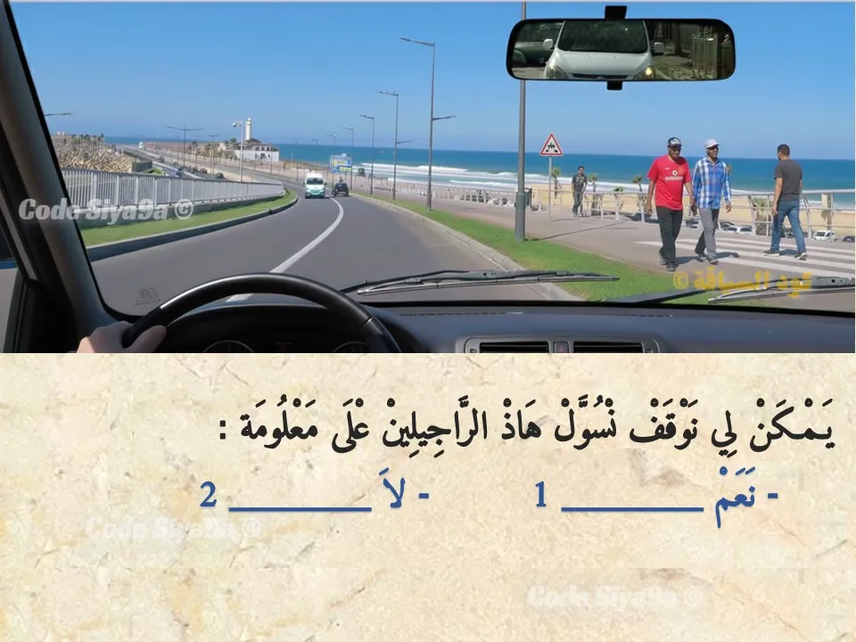
الجواب الصحيح: 2
في هذه الحاله ما يمكنش لي نوقف باش نسول هذا الرجلين على معلومه. نظرا لان الطريق ضيقه بالتالي التوقف او الوقوف ديالي غادي يعرقل حركه السعر يتسبب الازدحام مروري
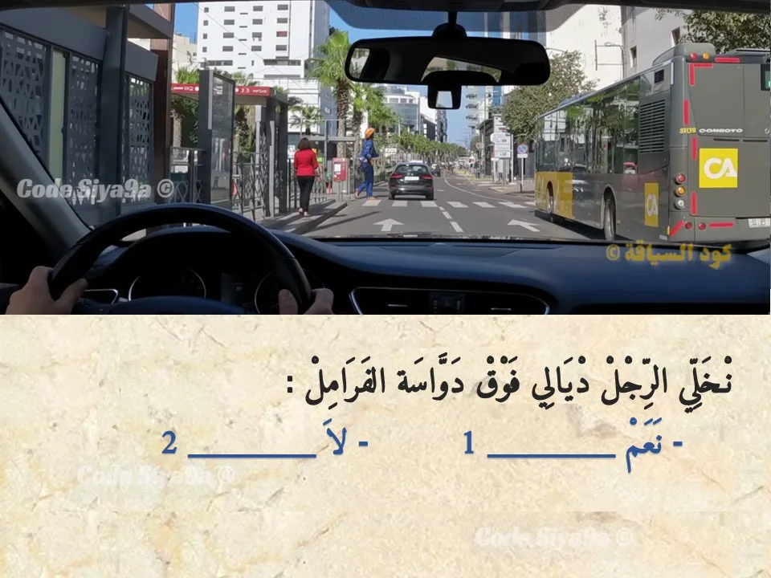
الجواب الصحيح: 1
هذه الحاله واجب علي نقص من السرعه حيث كاينه راجل قاطع في الممر ديال الراجلين من الواجب علي نعطي حق الاسبقيه
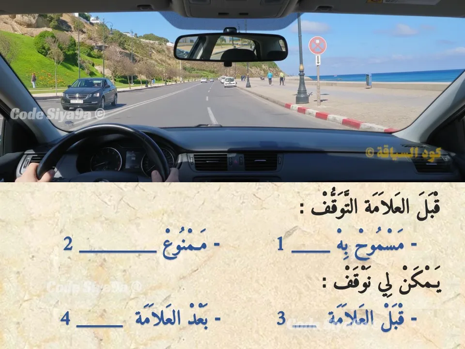
الجواب الصحيح: 2 و 4
هذه العلامه كاتعلم باللي الوقوف والتوقوف والممنوع. احسن العلامه كاينه سهم للاسفل هذا السهم كايعلم باللي الوقوف والتوقف ممنوع قبل العلامه .
- اما بعد العلامه يمكن نقوم بالوقوف او التوقف.
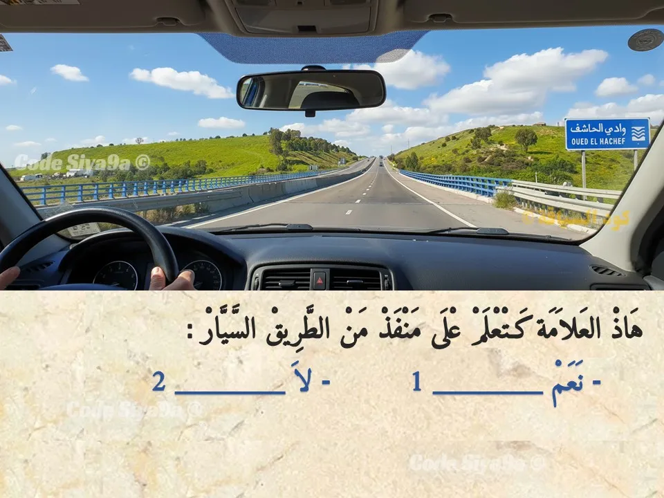
الجواب الصحيح: 2
هذه العلامه كاتعلم على مجرى المياه وليس منفذ من طريق السيار.
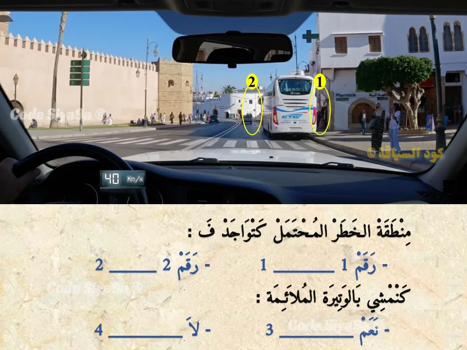
الجواب الصحيح: 2 و 4
هل الحافله كاتنزل الركاب وبالتالي كاين خطر محتمل. الخطر المحتمل كاينه في المنطقه رقم اثنان حيث ممكن الراكبين اللي نزلوا يقطعوا الطريق بدون ما ينتابه للتواجد ديالي. واجب عليا نقص من السرعه ونستعد للتوقف